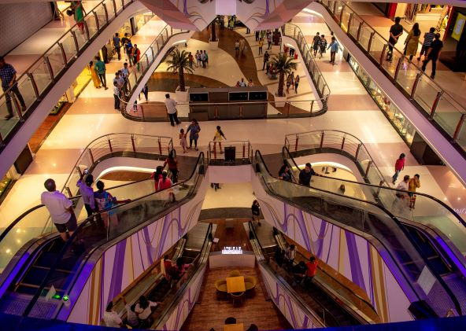

About Us
Business hours: 6am to 10pm -Monday to Friday.
6am to 8pm:Saturday
6am to 6pm:Sunday
We are a mall that features 50 shops to shop for all the shopaholics.Come get your chlothes, shoes, groceries,electronics and food. You name it we have got it.
The Mall is your one stop destination, offering shoppers a luxurious shopping experience,conveniently located in the friendly city of Port Elizabeth. At The Mall, shoppers are offered a high end shopping experience, including an exciting and diverse mix of retail stores and service related business. All located under one roof and situated in the flourishing Doom suburb. If you are looking for a luxurious centre to satisfy all your shopping needs then The Mall is the shopping centre for you, offering in excess of 43 000m² for retail floor space and 50 retail stores and restaurants to choose from.